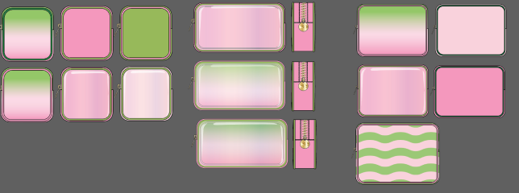

Chacha Matcha x Stoney Clover Lane
A collection for a popular matcha chain
TL,DR
Challenge: Designing a collection for a possible Stoney Clover Lane collaboration with Chacha Matcha.
Date: June - August 2023
Skill: Product Design, Tech Design
Tools: Adobe Illustrator
Context
This project was my intern project for Stoney Clover Lane, where I worked with the Product Development intern to create a collection for SS25. For this project, I worked on designing and illustrating silhouettes, prints, and patches for the collection.
Inspiration
The collaboration was inspired by a popular matcha chain located by Stoney Clover Lane’s New York office, Chacha Matcha. We came to the decision for several main reasons:
- Chacha Matcha's vibrant aesthetic complements Stoney Clover Lane's existing collections, ensuring a seamless fusion of the two brands.
- Both brands cater to a similar demographic of young adults aged 18-30, ensuring audience reception for the collaboration.
- A desire among consumers for limited edition products, creating a sense of excitement around the collaboration's offerings.
Moodboard
To communicate our vision for the collaboration, we created a moodboard with images from Chacha Matcha's branding and stores.

Ideation
Colors + Prints
- The colors are inspired by Chacha Matcha’s branding and core colors. We matched the Pantones of their two core colors to PANTONE 672 C and PANTONE 359 C.
- I created two prints inspired by Chacha Matcha’s drinks.
- The first print is a gradient inspired by their strawberry matcha latte with a white layer in the middle to prevent any graying in the gradient between the complementary colors.
- The second print is a squiggly pattern inspired by drink drizzles in an alternating color sequence.
Silhouettes
- The four bag silhouettes chosen were three existing SCL pouch silhouettes which are included in almost every collection — the mini, small, and large pouch.
- We added piping to the bag to create visual interest wiht the two core colors of the collection
- We developed a fourth bag silhouette based on market trends and missing end styles, a structured tote popularized by designers such as LV and Marc Jacobs.
- We wanted to include a clear front to some pouches to create a drink inside a plastic cup effect.
Iterations
For each pouch we created several iterations combining different colors, concepts, and prints.
Final CADs
We narrowed down our silhouette and colorway options with feedback from peers and mentors, focusing on cohesiveness and variety with the bags. I created the final CADs to scale in Adobe Illustrator and the Product Development Intern wrote the item specifications (materials and dimensions) for each bag and patch. We presented the collection to Stoney Clover Lane's directors at the end of the summer.